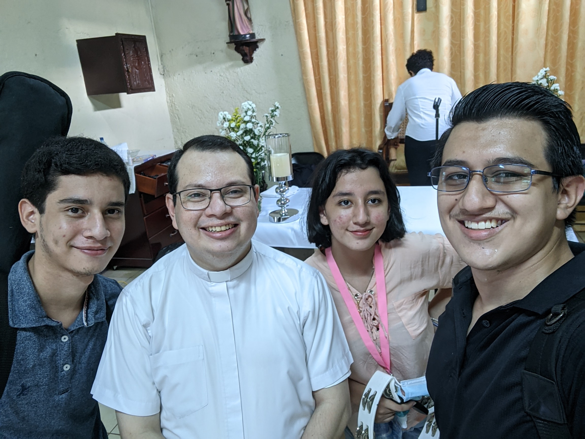
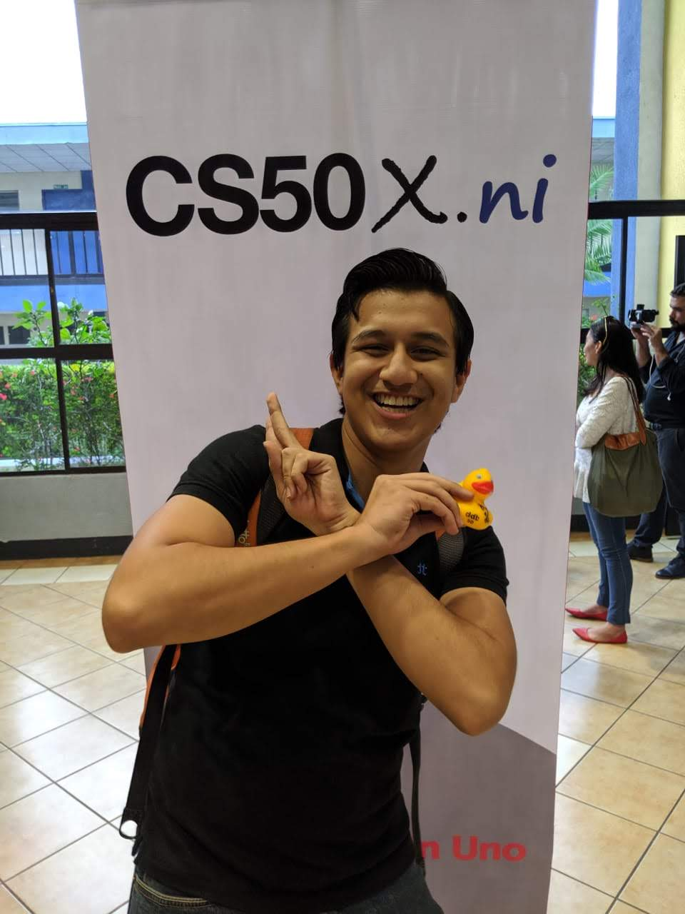

Intereses Personales
Hobbies
Musica (Guitarra)
Soy apasionado de la musica, en especial de la Guitarra Clasica, soy parte del Coro Juvenil de la Parroquia San Miguel Arcangel

Ingles
El Ingles ha sido un pilar de mi educacion desde pequeño, fui becado por la embajada de EUA con el programa ACCESS y termine mis estudios en el Centro Cultural Nicaraguense Norteamericano
El Mundo Tecnologico
Desde pequeño me ha apasionado cualquier tema sobre computadoras, videojuegos y telefonos, tanto que mi carrera y otros estudios han sido enfocados a este maravilloso mundo del cual espero poder hacer una vida en el futuro
Videojuegos
Los videojuegos son un pilar importante en mi vida, pues es a donde voy cuando tengo un mal dia o necesito alejarme un rato del mundo exterior, mis juegos favoritos son:
| # | Juego |
|---|---|
| 1 | Halo Infinite |
| 2 | Minecraft |
| 3 | Need4Speed |
| 4 | Left4Dead |
| 5 | Assassin's Creed |